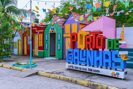
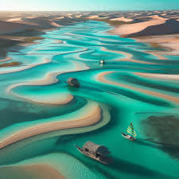
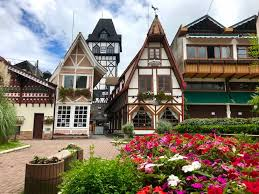

Top 5 Melhores Viagens no Brasil
Segue a baixo os melhores pontos turiscos do Brasil.
- Porto de Galinhas, Pernambuco.
- Lençóis Maranhenses, Maranhão.
- Rio de Janeiro, Rio de Janeiro.
- Campos do Jordão, São Paulo.
- Foz do Iguaçu, Paraná
Porto de Galinhas, Pernambuco
Porto de Galinhas é a principal e mais movimentada das praias do litoral pernambucano, visitada o ano inteiro pelos turistas devido, à sua beleza natural e à excelente infra-estrutura hoteleira. A praia de Porto de Galinhas está localizada no município de Ipojuca, a 60Km ao sul do Recife.
Lençóis Maranhenses, Maranhão

O Parque Nacional dos Lençóis Maranhenses é o destino perfeito para aqueles que buscam aventura e contemplação da natureza!! Caminhar sobre as areias brancas do maior campo de dunas do Brasil, se refrescar em lagoas de água cristalina e observar o pôr-do-sol são experiências únicas que você levará para o resto da vida.
Rio de Janeiro, Rio de Janeiro

É a segunda maior metrópole do Brasil (depois de São Paulo), a sétima maior da América e a décima oitava do mundo. Sua população estimada pelo IBGE para o censo de 2022 era de 6 211 423 habitantes. Tem o epíteto de Cidade Maravilhosa, e os que nela nascem são chamados de cariocas.
Lençóis Maranhenses, Maranhão
O Parque Nacional dos Lençóis Maranhenses é o destino perfeito para aqueles que buscam aventura e contemplação da natureza!! Caminhar sobre as areias brancas do maior campo de dunas do Brasil, se refrescar em lagoas de água cristalina e observar o pôr-do-sol são experiências únicas que você levará para o resto da vida.
Campos do Jordão, São Paulo

Campos do Jordão é um dos quinze municípios paulistas considerados estâncias climáticas pelo governo paulista. Campos do Jordão é chamada de "Suíça Brasileira", como estratégia de marketing, pela sua arquitetura tardia baseada em construções europeias e pelo seu clima mais frio que a média brasileira.
Foz do Iguaçu, Paraná

Com aproximadamente 285 mil habitantes, Foz do Iguaçu está localizada no extremo Oeste paranaense, na chamada tríplice fronteira entre Brasil, Paraguai e Argentina. A cidade é um dos destinos turísticos mais importantes do Brasil e o mais visitado do Paraná, por estrangeiros.